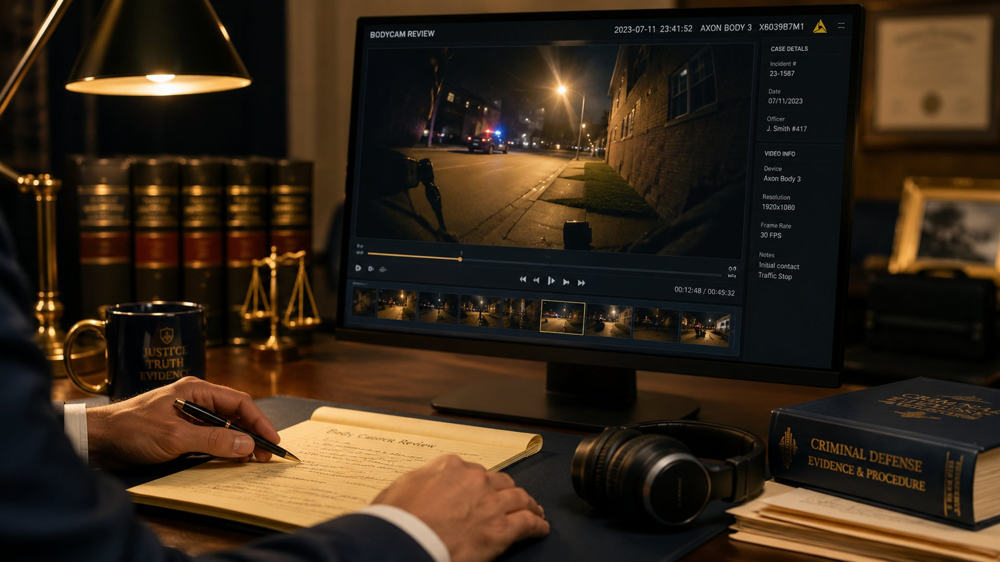
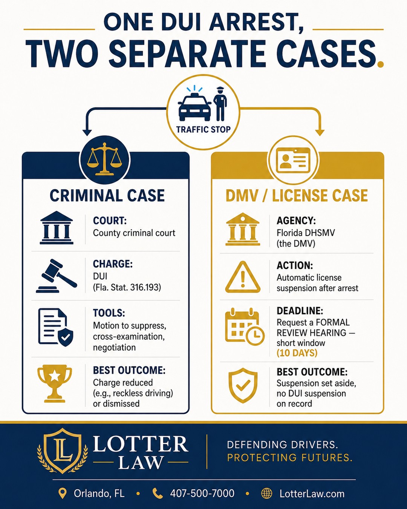

DUI Reduced to Reckless Driving: A Biased Police Witness

A police officer is a witness like any other — and a witness can have a stake in the outcome. In a recent Florida DUI case, the arresting officer was still in field training, friendly and cooperative with the State, and clearly wanted his case to hold up. But the record told a different story than his testimony did. Even after the judge denied our motion to suppress, exposing those inconsistencies helped win the formal review and reduce the charge to reckless driving.
The driver was charged under Florida Statute 316.193, the state's DUI law. This post is about something defense lawyers see often but clients rarely hear discussed honestly: officers are people, and people are tempted to win. That temptation can show up in how an officer testifies — and a careful look at the evidence is how it gets exposed.
A Police Officer Is a Witness, Too
Jurors and clients often assume an officer's testimony is neutral — just the facts. The reality is that the officer who made the arrest has a natural interest in seeing that arrest stand up. That doesn't make every officer dishonest. It does mean their account deserves the same scrutiny as any other witness who has something riding on the result. The job of the defense is to test that account against the things that don't change their story: the body camera, the records, and the officer's own prior testimony.
What the Bodycam Caught
Body-worn camera footage is powerful precisely because it doesn't shade the truth. In this case, the video captured the officer-in-training saying, in substance, that he had "nothing besides the odor." The audio in that segment is not perfectly clear — and that ambiguity became its own moment at the hearing.
Before the hearing, we made sure the officer had listened to the clip. On the stand, he confirmed that he had. But when asked what he had said in that recording, he would not concede the words that helped the defense — even after hearing them again. A neutral witness listens and tells you what the recording says. A witness invested in the outcome finds reasons not to hear it. The jury, the judge, and the prosecutor all noticed the difference.
Two Hearings, Two Different Stories
A DUI arrest in Florida actually triggers two separate proceedings: the criminal case, and a separate administrative case at the DMV over the driver's license. The driver can challenge the administrative suspension at what's called a formal review hearing. The same officer testified in both that hearing and the criminal motion to suppress — and his accounts differed in ways that mattered.

Those inconsistencies were not minor. Combined with a discovery problem — the officers failed to record the breath test — the gaps between what was documented, what was recorded, and what the officer said under oath gave us real leverage. The kinds of issues that weaken a DUI prosecution are usually hiding in exactly these places:
Where DUI Cases Get Weaker
- Body camera footage — what the video actually shows and says is not always what the report or the testimony describes.
- Inconsistent testimony — an officer who testifies at more than one hearing has to tell the same story each time.
- Breath testing — the machine, the operator, the observation period, and the records all have to hold up — and the test has to be recorded.
- Disclosure issues — when the State is incomplete in what it documents or turns over, that has consequences.
- Officer training and procedure — field sobriety exercises have to be administered the right way to mean anything.
Losing the Motion Wasn't the End
The judge denied our motion to suppress. On its own, that can feel like the case is lost. It wasn't. The credibility problems we surfaced — the bodycam, the shifting testimony, the unrecorded breath test — carried into the rest of the fight.
At the formal review hearing, the client won: the administrative suspension was set aside, so there was no DUI suspension on his record. And in the criminal case, the same weaknesses moved the State off the DUI. The charge was ultimately resolved as reckless driving under F.S. 316.192 — the only thing that now reflects on his record.
Why That Result Matters
People sometimes assume that if a case still ends in a plea, the outcome doesn't matter much. It matters a great deal. Compared to a DUI conviction, this kind of reckless driving resolution — paired with winning the administrative hearing — can mean:
- No DUI conviction and no DUI suspension on the driving record
- Avoiding the mandatory minimum penalties built into the DUI statute
- More flexibility on license consequences and insurance impact
- A charge that is generally viewed very differently on background checks
The lesson is not that the officer was a villain. It is that an officer is a witness with something at stake, and testimony from a witness with something at stake has to be tested — against the bodycam, against the records, and against what that witness said the last time. A denied motion is not the end of that work.
Every case is different. This result does not guarantee the same outcome in your case. No two cases are alike, and prior results do not predict future outcomes. What this case shows is what's possible when an officer's account is tested against the record instead of simply accepted.
Arrested for DUI in Central Florida?
A denied motion isn't the end, and the officer's account isn't the last word — but the window to challenge your license suspension is short. Have the bodycam, the records, and the testimony reviewed before you decide anything. Call for a free consultation.
Legal References
Related Articles

Jeff Lotter
Criminal Defense Attorney | Former State Trooper
Jeff Lotter is an Orlando criminal defense attorney and former Florida Highway Patrol trooper. He uses his law enforcement background to build stronger defenses for clients facing DUI and criminal charges.